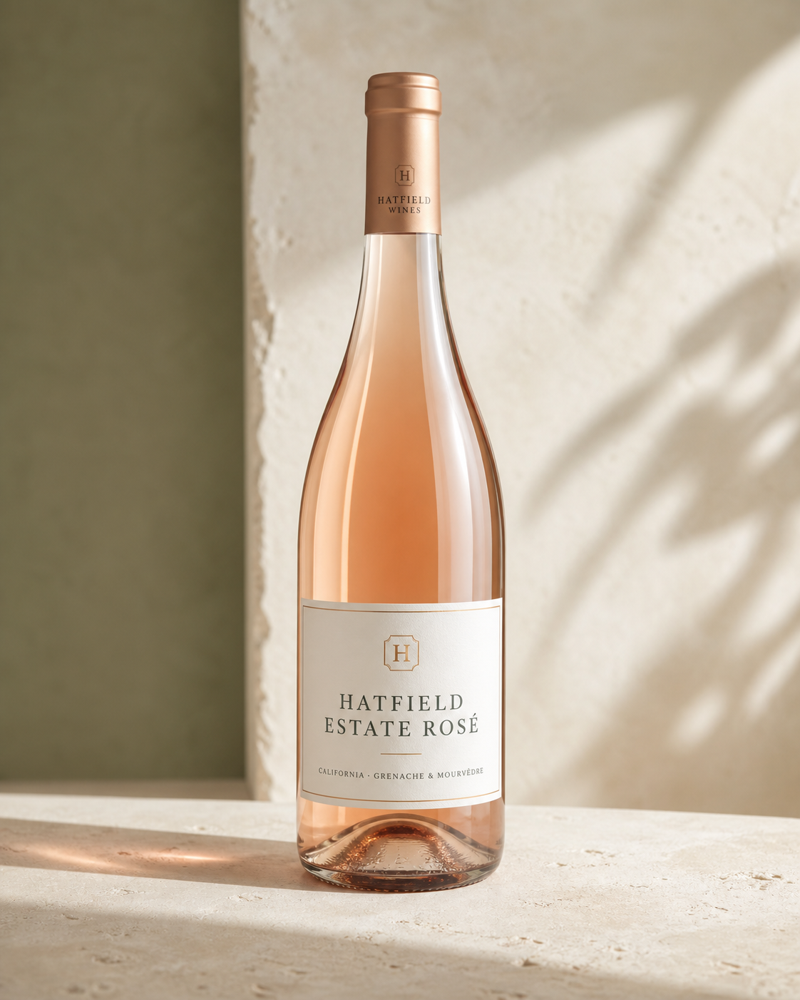

California
Estate Rosé
Grenache and Mourvèdre made within Hatfield Wines’ estate-and-grower model: the rare wines build authority; the regional wines provide honest scale.
- Origin
- California
- Style
- Grenache and Mourvèdre
- Release
- seasonal
- Availability
- national and Hatfield venues
Profile
Place before portfolio.
Napa and Tuscany are handled as distinct wine cultures. Picking, extraction and oak decisions sit with the wine team, not the bourbon business.
- 01wild strawberry
- 02watermelon rind
- 03rosehip
- 04dry finish